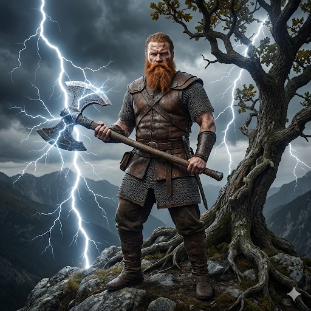

Perun

Perun je asi tím úplně nejznámějším slovanským bohem. Pokud znáte Thora od Vikingů nebo Dia z řeckých bájí, tak Perun je jejich slovanský "kolega". Můžete si ho představit jako hlavního šéfa mezi bohy a absolutního vládce nad vším, co se děje na obloze.
Jeho hlavní prací bylo řídit počasí, konkrétně bouřky. Když venku hřmělo a blýskalo se, staří Slované věřili, že to Perun jezdí po nebi na svém rachotícím voze a metá blesky na zem. Tyto blesky často házel v podobě kamenných seker nebo kladiv.
Nebyl ale jen "meteorolog". Byl to také mocný bůh války, hrubé síly a ochránce spravedlnosti. Bojovníci a knížata ho uctívali, aby jim dal sílu v boji a zajistil vítězství. Lidé si ho představovali jako svalnatého, drsného chlapa s velkým, často zrzavým vousem. Jeho posvátným stromem byl mohutný dub, který představoval jeho sílu a odolnost. Byl to přísný, ale spravedlivý ochránce lidí před zlem.